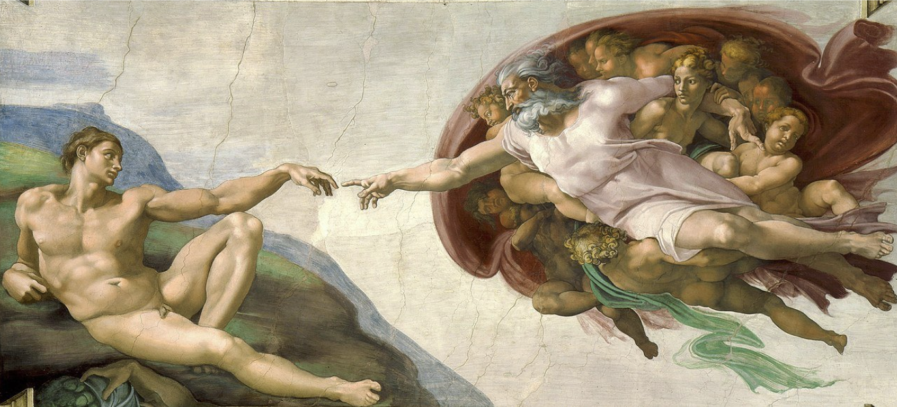

Beauty is one of the few things that silences me. A golden sunset, a child’s laugh, the silence of an old monk praying; these things don’t argue nor convince. They simply are, and their very presence speaks. But what is beauty, really? Why does it move people like you and me so deeply, sometimes to tears, sometimes to laughter? Is it just a matter of personal taste or is it something more eternal?
I begin this blog here, not because I understand beauty fully, but because it understands me. As I travel and reflect upon my life, I see that it’s been chasing me through the cracks of esse, in moments I often overlook. And I wonder if, perhaps, beauty isn’t just for decoration.
Grace
“There is beauty in everything.” We’ve all heard this cliché. But can we really say that there is beauty in everything? Could you find beauty in the death of a little boy in India, who’s never heard the gospel, therefore condemned to eternal death and separation from God? Where’s the beauty in that?
This isn’t an abstract philosophical exercise. It’s a real, moral crisis to our Christian faith. If we believe that beauty is present in all things, then we must ask: what kind of beauty can coexist with suffering that offers no resolution? Is it beauty at all, or are we simply dressing up horror in poetic language? If justice and mercy are inseparable from God’s nature, how can we call it beautiful when a soul perishes without ever having had the chance to know Him? Is there an eschatological truth behind this? At some point, your definitions might begin to fracture. Either our theology bends to preserve the concept of beauty, or beauty itself becomes very hollow. If beauty is to mean anything at all, must it not be more than symmetry, more than emotional comfort.
*Now… before I speak of hope (a very beautiful mystery in itself), we must acknowledge the weight of divine justice. And to speak of God’s justice isn’t something we can take so lightly, but it’s cardinal to standing before conclaves in heaven.
Where were you when I laid the earth’s foundation? Tell me, if you understand.
Job 38:4
God offers no logical defense for suffering. He appears out of the storm, not to explain Himself, but reveals that He alone is God. When I read things like this, I stop complaining. It’s not that my complaints are silenced by the certainty God provides, but in awe. Justice, in its purest form, belongs to a mind that sees the end from the beginning. And that will never be us.
See beauty in that. Not in the way beauty is often defined, but in the terrifying assurance that justice is real and not subject to our control. The eternally damned boy in India reminds me that justice does not flatter my sense of fairness, but dismantles it. Only a Holy God who sees rightly, acts rightly, and judges rightly can say that something is not beautiful. And I am left undone. Because I will never be able to explain why a fool like me is granted fortunes (such as life) over an agonized boy in India. And sometimes, this is beauty: submitting to what God calls beautiful.
And I’m not saying we should romanticize suffering or hide behind lofty ideas of divine sovereignty. That is bad. I was talking with a friend recently who was telling me how hard life had become: struggling to pay rent, barely getting by. And my comfortable, westernized brain instinctively slipped into 'hero' mode, trying to offer perspective, trying to steer him to look at the silver lining. He glared at me and said, very bluntly, “How the f*** can you say that?” And I sat there getting rebuked for adulterating his afflictions.
That’s not reverence; that’s evasion. What I’m saying is this: we stand before a God whose ways are not our ways, and whose judgments are unsearchable and unfathomable. We often want beauty to be gentle, comprehensible, and consoling. But in Scripture, beauty is often bound to glory. And glory is far from safe.
(The mountain burns with fire, the temple trembles, and even the seraphim veil their faces; Isaiah sees the Lord and cries, “Woe is me, for I am undone”; on and on…)
To be clear, no, I do not find beauty in the death of a little boy in India in the way we often mean beauty. Not in sentiment, not in metaphor, not in emotional manipulation. I find no beauty in damnation, if by beauty we mean something we might ever choose, celebrate, or hold up as good. And I would go so far as to grieve for those who fall within the scope of what I understand as justice. But there is a strange something that pulls me into the beak that doesn't yield to me. A beauty that crushes my assumptions, not one that makes them easier to bear. Like a beauty that begins where things end.
And maybe this is why hope becomes so luminous. Not because it makes things easier to understand, but because it burns in the midst of what we cannot. Hope is not optimism. Hope is not naivety. Hope is the anchor cast into the Holy of Holies (Hebrews 6:19), into a palatinate we cannot see, tethering us to a mercy we cannot measure.
(Hope is a whole topic in itself. One that would take too long to unpack here. Maybe I'll save it for another blog.)
The Biggest Beauties
And I don’t write this way to stop you from seeing the beauty in the big things—Antelope Canyon, Niagara Falls, your girlfriend. I’m sure it doesn’t take much effort to see how God carved and folded these figures. But what if I told you there are greater beauties outside of what’s found in the spectacular? What if they’re buried in the little things? The mundane things.
We are perishing for want of wonder, not for want of wonders
G.K. Chesterton
I like the way Chesterton says that the greatest error of modern man was not in failing to see the extraordinary, but in growing bored with the ordinary. Beauty isn’t something reserved for distant landscapes or grand cathedrals, but it’s the things we can take away from looking at puddles, in cashiers, in the pattern of daisies, in the absurdity and miracle of existence itself.
If beauty lives even in the ordinary, then the question is not whether it’s present, but whether we’re still capable of seeing it. The incarnation is God’s declaration that the mundane is not beneath Him. He did not arrive draped in spectacle or grandeur, but in skin and bone. The same God who split seas and shattered idols allowed Himself to be swaddled, burped, and tucked into bed.
We often forget that the eternal stepped into time—not to avoid suffering, but to embrace it. He came not as a king shielded from sorrow, but as a man acquainted with grief. Jesus endured what we fear most: to be punished for doing no wrong. He was falsely accused, misunderstood, mocked. He was rejected by His people, betrayed by His closest friends, and crucified like a criminal.
False Allure
This is only written for the most humble. Feel free to skip this section if you don’t want to read ;)
Some beauty deceives. Some beauty flatters your pride, plays to your desires, and slowly pulls you away from the truth. It looks radiant. It speaks sweetly. But it leads you where you were never meant to go. Delilah was beautiful. So was the fruit in Eden. So are many of the things we chase when we are tired of waiting for God. Beauty, when severed from truth, becomes seduction.
“Then your fame spread among the nations on account of your beauty, for it was perfect
because of My splendor which I bestowed on you,” declares the Lord God. “But you
trusted in your beauty and became unfaithful because of your fame, and you poured out
your obscene practices on every passer-by to whom it might be tempting”.
Ezekiel 16:14-15
So here is my warning: be careful when you are looking at beauty. Be discerning. Be patient. Beauty that comes from God won’t manipulate. It won’t flatter your ego or excuse your compromise. It’ll lead you closer to holiness. For brothers, I’ve noticed that we are so easily influenced by the beauty of incidental doobry such as women, cars, guns, pokemon cards, etc.
It’s important not to chase a version of beauty that was never meant for us. In a world saturated with media and comparison, it’s easy to measure ourselves against unrealistic standards, and naturally, that can lead to self-criticism. But even if you do manage to attain that idealized “beauty,” it may come at a cost, potentially leading others to stumble (Romans 14:13). Humble yourselves (different than beating yourself up). If you don’t, God will surely bring period cramps and break outs (ladies, I’m a fundamental feminist. Don’t worry ;p).
Lexicon
This section is more informative, but equally important.
Kalos is the main Greek word we translate as beauty in the New Testament. It combines being physically beautiful/handsome with being good, excellent, useful and fit for purpose. This can describe objects (Luke 21:5). In the epistles it is most often used to describe ‘good works’. When we are beautiful, we are fit for our purpose: to love God to the utmost.
Horaios is used much less and can be translated as blooming and beautiful. The two key verses where it is used are:
Woe to you, scribes and Pharisees, hypocrites! For you are like whitewashed tombs
which on the outside appear beautiful, but inside they are full of dead men’s bones and
all uncleanness
Matthew 23:27
But how are they to preach unless they are sent? Just as it is written: “HOW
BEAUTIFUL ARE THE FEET OF THOSE WHO BRING GOOD NEWS OF GOOD
THINGS!”
Romans 10:15
The feet of those who bring good news are described as beautiful, originally by Isaiah who is then quoted by St. Paul who uses the word Horaios, that is beautiful in a blooming sense. A messenger running to bring good news in ancient Israel would have dirty, hot, sweaty feet, so we are not really talking about the sort of beauty that appeals to the senses, but rather the beauty of one who is bringing news of Christ’s salvation, news so amazingly longed for and desired that the hot, sweaty, dusty feet of the messenger are truly beautiful, like a plant blooming in season. Nonetheless, pretty feet are also attractive.
Beauty
As I draw this blog to a close, remember that the world is lavish with competing beauties. In my life, I have encountered a fair number of what many would commonly call beautiful, and indeed, I can testify that they are. Hedonism, utilitarianism, consumerism, materialism (on and on) each present compelling visions of the ‘good life’. They offer coherent frameworks with real appeal and logic, and their influence is not without reason.
I’ve had my toss and turns in life, but let my beauty be Christ. The Eucharist, the Incarnation, the Ransom, Living Water, New Adam, the True Vine, Bridegroom, Prince of Peace, etc.
You’ve probably heard this one before: the Gospel. And the beauty of this message is deeper than being a ‘moment’ in history. It is not just a story I believe, but a truth that reshapes my whole life. The cruciform design of God’s love isn’t a doctrine for show. It affects the way I love, the way I forgive, the way I endure, and the way I see beauty.
This isn’t just news to receive. It becomes more of a pattern to follow. Christ wasn’t only crucified for me, but He enjoins me to take up my cross, to lay down power, to love when it hurts, and to see glory in the places the world overlooks.
And lo, we make a decision: Christ or the world (Mark 8:36, Luke 9:25). Candid, we have received grace that sanctions our choice in God. But let’s not misconstrue the gravity of that choice. For many will measure Christ against the shiny immediacy of the world and decide He costs too much (Matthew 26:16, 2 Timothy 4:10). Understand that some will be unable to choose Christ. Love them still, but love them best by carrying their names to the throne. And see this: Calvary is not a relic sealed in first-century dust. The cross keeps unfolding in the submission of pride to humility, vengeance to mercy, or convenience to covenant. Every hidden obedience reenacts that hour’s beauty, proving that Golgotha still beats at the center of the world’s redemption.
Late have I loved you, O Beauty ever ancient, ever new. Late have I loved you.
St. Augustine of Hippo
And there can always be more… When St. Augustine speaks of having touched every earthly brilliance, he is not bragging. He is confessing. He reveals that what the world called treasure was only a shadow of what he later found. It was only when he encountered God that he understood: beauty is not merely something God gives. Beauty is what God is.
We, as foolish beings, should marvel at the beauty that transcends time. “Late have I loved you.” Praise God's beauty, but grieve the years we’ve spent so blind to it. Yes, oftentimes we chase brilliance in all the wrong places and it leads us to detain the ache of having pursued lesser things with urgency, while treating the most worthy beauty as an afterthought. But what’s even greater than our failure is God's grace. Because the beauty of God is patient. It doesn’t vanish when ignored. And when we finally turn to see it, we do not find a beauty that has dimmed. We find a beauty that still burns with the same gentle power it always had.
Closing
Again, the point of this blog is not to deter your preexisting concept of beauty, but to enhance it. Take what you will from these words, and let them provoke reflection. Examine the beauties in your life. Let them not terminate on themselves, but lift your eyes higher. May every glimmer of beauty stir in you a deeper adoration for God, and may that adoration overflow in thanksgiving. For from Him and through Him and to Him are all things (Romans 11:36).
Before the next blog, I’ve written a few questions that compliment this blog. Please ponder them and feel free to send me your thoughts. I am curious and want to know what you think!
- What kinds of beauty have I been chasing and where are they leading me?
- Have I grown bored with the ordinary?
- Is my understanding of beauty rooted in truth or in my desires?
- Where in my life have I seen the beauty of God break through unexpectedly?
- Am I willing to redefine beauty if it means I see more of Christ?
Again, respond with any thoughts, disagreements, prayer requests, or anything else. May we become people who see and cherish the beauty in the people around us. See you soon in my next work!
See you soon,
Very beautifully,
With grace,
Ray
PostScript: I hope that this blog was quite easy to take in as it isn’t exactly advanced theology. It’s the sort of truth we learn Sunday and then forget by Tuesday. Precisely for that reason it matters. If we can’t recognize genuine beauty, or guard our hearts from its counterfeits, every richer doctrine we stack on top will list and crack. Can’t wait for some of these next blogs :)
PostPostScript: If you want a word that’ll enlarge your brain: pulchritudinous. All your friends will think you’re smart

Mark 14:3-6 (emphasis on 6)
3 While he was in Bethany, reclining at the table in the home of Simon the Leper, a woman came with an alabaster jar of very expensive perfume, made of pure nard. She broke the jar and poured the perfume on his head.
4 Some of those present were saying indignantly to one another, “Why this waste of perfume? 5 It could have been sold for more than a year’s wages and the money given to the poor.” And they rebuked her harshly.
6 “Leave her alone,” said Jesus. “Why are you bothering her? She has done a beautiful thing to me.”